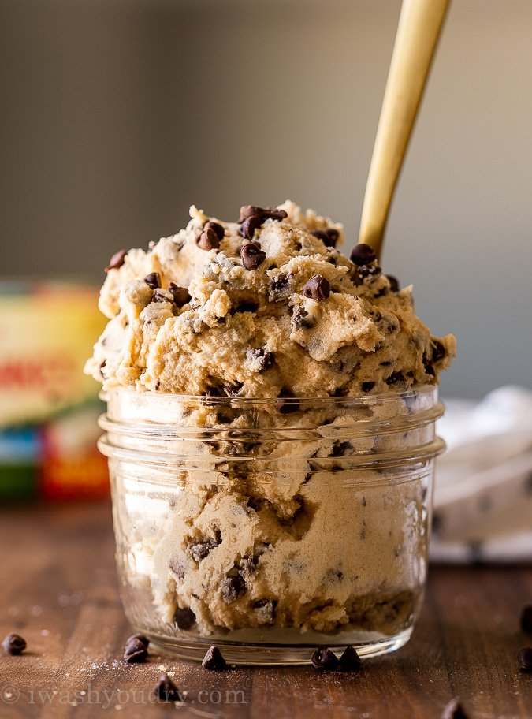

Edible-cookie

Ingredients
- 1 cup all-purpose flour
- 3/4 cup packed brown sugar
- 1/2 cup butter
- 1 teaspoon vanilla extract
- 1/2 teaspoon salt
- 2 tablespoon milk
- 1/2 cup milk chocolate chips
- 1/2 cup mini chocolate chips
Steps
- To heat-treat your flour so it is safe to use:place flour in a microwave-safe dish and cook for 1 munute and 15 seconds,
stirring it every 15 seconds.set aside.
- Beat sugar and butter with an electric mixer in a large until creamy.Beat in vanilla extract and salt.
Add heat-treated flour;mix until a crumbly dough forms.stir in milk until dough is just combined;fold in milk
chocolate chips.
Homepage